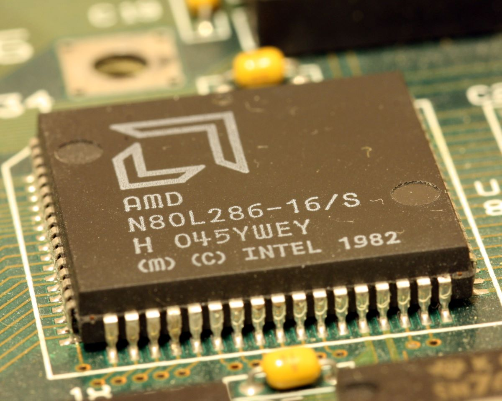
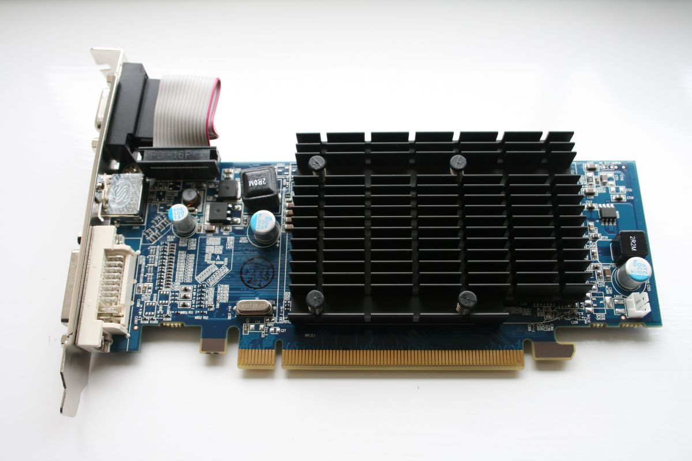
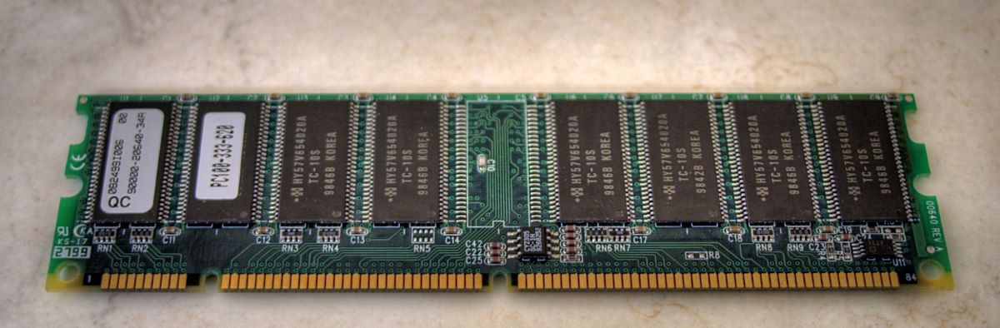
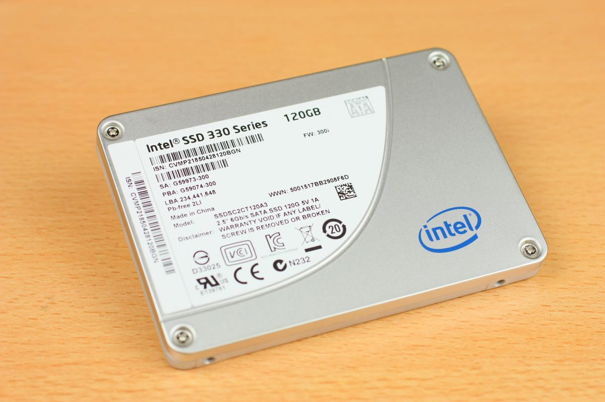

This page is designed to explain some of the terminology used throughout the website, mainly in the specification section.
CPU

"286 CPU" by pasukaru76
is marked under CC0 1.0. To view the terms, visit https://creativecommons.org/licenses/cc0/1.0/
Central Processing Unit. The CPU has the job of retrieving and executing instructions. It is one of the fundamental parts of a computer/console. A CPU may have multiple cores.
Cores are what a CPU is made up, each able to perform and execute an instructions at the same time. The more cores there are, the more operations the CPU can potentially do at any given time.
The speed of a CPU is measured in hertz (Hz), whereby 1Hz is 1 operation every second, 2Hz is 2 operations every second, 3Hz is 3 operations every second and so on. However, due to
advancements in technology, most CPU's are capable of over 1,000,000,000Hz, which can be simplified to 1GHz (1 gigahertz). For example, a cpu with a processing speed of 3.5GHz is able to
perform 3,500,000,000 operations every second.
GPU

"Sapphire ATI Radeon HD 4550 GPU" by William Hook
is licensed with CC BY-SA 2.0. To view a copy of this license, visit https://creativecommons.org/licenses/by-sa/2.0/
Graphics Processing Unit, more commonly called a graphics card. This is the component of a computer/console that is in charge of providing you the graphical display/image on a screen/monitor,
allowing you to interact with the computer/console. Some CPU's are designed to provide a graphical interface themselves. However, in the case of games, most are very graphically intense, and
require a dedicated processing unit that is specialized for this purpose, hence why consoles have a grahics card. A FLOP means how many floating point operations the graphics card can process
every second. This is how a computer/console stores images, the graphics card turning these numbers into a display. Without going too technical, the more higher the resolution, or the more things
there are to load, the more floating point operations a GPU has to perform in order to provide that image. If you want to see your image at 60fps, which these consoles are said to achieve at 4k resolution,
the image has to be provided 60 times a second, meaning the GPU has to process all of the data for said image in less that 1/60th of a second. Therefore, the moer FLOPs a GPU can achieve, the
faster it can show an image, and the more frames every second it can show. A TFLOP means a teraflop. or 1,000,000,000,000 FLOPs.
Memory

"Random Access Memory (HDR)" by Sensual Shadows Photography
is licensed with CC BY-NC 2.0. To view a copy of this license, visit https://creativecommons.org/licenses/by-nc/2.0/
Memory, in term of this website, is refering to Random Access Memory, or RAM for short. RAM allows for regularly used instructions and data to be temporarily kept in there, so that when the instructions/data
are requested, they can be received faster than in comparison to receiving the data straight from storage. The more RAM there is, the more data and instructions can be held at any given time, pontentially speeding
up processing time (For computers, receiving each instructions/piece of data a few billionths of a second faster each time, compared to a different source, can make a big difference to performance)
1GB means the RAM can hold 1 Gigabyte of data, or 1,000,000,000 bytes of data. The more Gigabytes RAM can hold, the better performance a computer/console may potentially has.
Storage

"Intel SSD SSDSC2CT120A3" by Laineema
is licensed with CC BY 2.0. To view a copy of this license, visit https://creativecommons.org/licenses/by/2.0/
A Storage device is the part of the computer/console that allows you to store all of the files and data for any apps and games that you have. Storage space is often measured in Gigabytes (GB) or Terabytes (TB). 1TB is equal to 1000GB. Some of the latest games may require
around 20-50GB each to store, older games may require even less (some even under 1GB), and some may require a significant amount of storage (Red Dead Redemption 2 requires 150GB to store, Call Of Duty: Modern Warefare requiring 230GB of storage). Therefore, the bigger the
storage device, the more games you can install without having to resort to buying an extra storage device for you console.
IO Throughput
IO Throughput is the rate of data transfer for the storage device. The faster this is, the faster a game files can potentially load, possibly leading to reduced loading screen times. Data transfer, in terms of these consoles, in measured in GB/s.
1 GB/s means the storage device is capable of transferring 1,000,000,000 bytes of data every second. "Raw" means that the data sent hasn't been compressed (whereby more data can be sent at once). The compressed data transfer rate was left out, as having all data
compressed to the levels in order to achieve the transfer rate stated will most definitely not be seen for all game files, and therefore the raw data transfer rate will be closer to the actual performance.